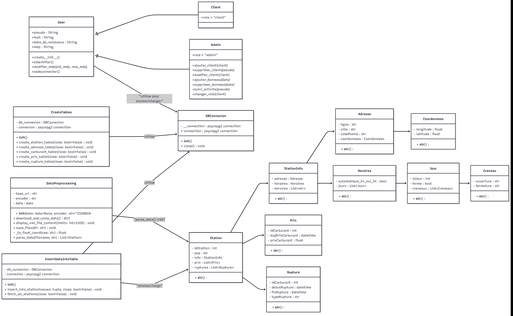
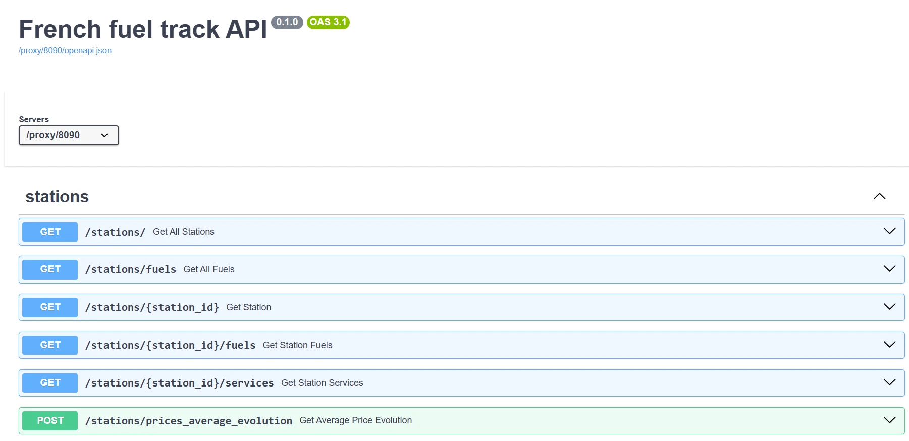

Fuel prices in France are published as open data, in XML files that are fragmented and impractical to analyse directly.
How to give users a simple way to explore fuel prices, while keeping the code robust for a team of developers?
The data had to be ingested, stored, secured behind accounts and analysed, by several developers working on the same codebase, without the project becoming fragile.
How to organise the code?methodological question
- Tension
- Several developers, many features, one codebase.
- Choice
- A layered architecture: business objects, data access (DAO), services and interface, each with a clear role.
How to keep it reliable as it grows?methodological question
- Tension
- Every new feature can break an existing one.
- Choice
- A test strategy from the start, with unit tests and mocks for each layer.
- Open data (XML)
- Ingestion
- PostgreSQL
- Services
- FastAPI REST API
- Analysis and visualisation


- More than 520 unit tests and about 75 % coverage.
- Shared conventions with Git and GitHub across the team.
An application delivered end to end: secure accounts, price trends over time, station comparison and a REST API, so that users explore prices without handling ingestion or storage.
What remains open
- A course project, not a public production service.
What I took from it
- Architecture decisions pay off when several people work on the same code.
- Tests are what make a team fast, not what slows it down.
The whole project in one sentenceA layered architecture and more than 520 tests let a team turn raw XML open data into a secure application and REST API for exploring French fuel prices.